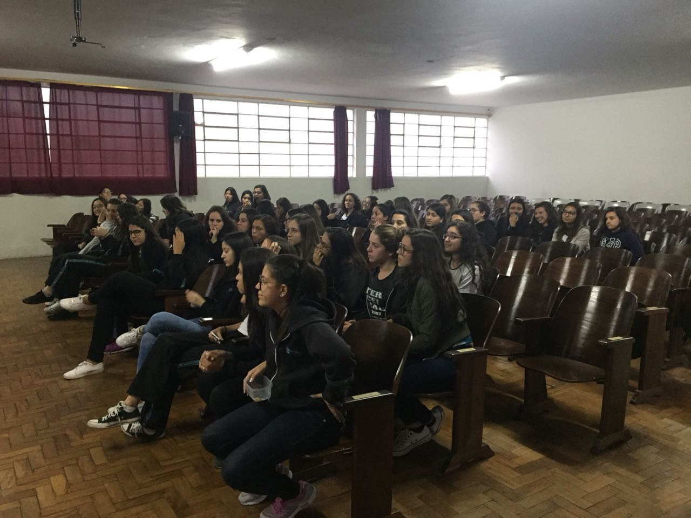

Programação também é coisa de menina!

O ProgramADAs é um projeto inovador com a missão de incentivar meninas do ensino médio a explorarem o universo da computação e também apoiar alunas do curso de Sistemas de Informação da UFVJM.
Acreditamos que a tecnologia tem o poder de transformar o futuro, e nosso objetivo é motivar as jovens a seguirem carreiras na área de tecnologia, além de fornecer suporte para que as alunas da universidade se sintam cada vez mais preparadas e confiantes em seu percurso acadêmico.
Por meio de oficinas, mentorias e eventos, oferecemos as ferramentas necessárias para que todas se sintam empoderadas a abraçar o mundo digital. Juntas, vamos transformar o cenário da computação e criar um futuro mais inclusivo e diversificado!